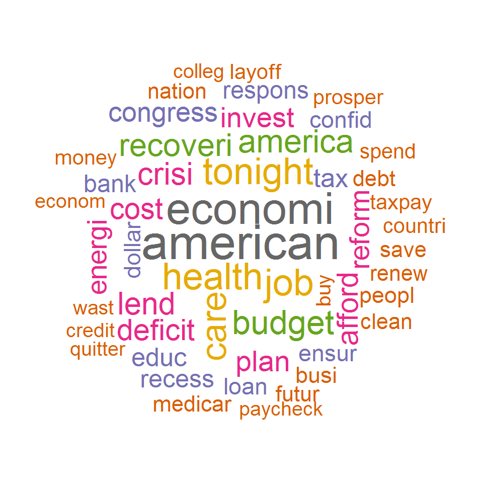

Tutorial 4: Key term extraxtion
Andreas Niekler, Gregor Wiedemann
2017-09-11
This tutorial shows how to extract key terms from document and (sub-)collections with TF-IDF and the log-likelihood statistic and a reference corpus.
- TF-IDF
- Log-likelihood ratio test
- Aggregations and visualization
Like in the previous tutorial we read the CSV data file containing the State of the union addresses and preprocess the corpus object with a sequence of tm_map functions.
This time, we also apply stemming to the corpus. Stemming reduces (potentially) inflected word forms to its word stem to unify similar semantic forms to the same text representation. For instance, ‘presidents’ becomes ‘president’ and ‘singing’ becomes ‘sing’.
Finally, we create a Document-Term-Matrix.
options(stringsAsFactors = FALSE)
library(tm)
textdata <- read.csv("data/sotu.csv", sep = ";", encoding = "UTF-8")
english_stopwords <- readLines("resources/stopwords_en.txt", encoding = "UTF-8")
# Create corpus object
m <- list(ID = "id", content = "text", DateTimeStamp = "date")
myReader <- readTabular(mapping = m)
corpus <- Corpus(DataframeSource(textdata), readerControl = list(reader = myReader))
corpus <- tm_map(corpus, removePunctuation, preserve_intra_word_dashes = TRUE)
corpus <- tm_map(corpus, removeNumbers)
corpus <- tm_map(corpus, content_transformer(tolower))
corpus <- tm_map(corpus, removeWords, english_stopwords)
# Stemming
require("SnowballC")
corpus <- tm_map(corpus, stemDocument, language = "en")
corpus <- tm_map(corpus, stripWhitespace)
# View first document
substr(as.character(corpus[[1]]), 0, 250)
# Create DTM
DTM <- DocumentTermMatrix(corpus)1 TF-IDF
A widely used method to weight terms according to their semantic contribution to a document is the term frequency–inverse document frequency measure (TF-IDF). The idea is, the more a term occurs in a document, the more contributing it is. At the same time, in the more documents a term occurs, the less informative it is for a single document. The product of both measures is the resulting weight.
Let us compute TF-IDF weights for all terms in the first speech of Barack Obama.
require(slam)
# Compute IDF: log(N / n_i)
number_of_docs <- nrow(DTM)
term_in_docs <- col_sums(DTM > 0)
idf <- log2(number_of_docs / term_in_docs)
# Compute TF
first_obama_speech <- which(textdata$president == "Barack Obama")[1]
tf <- as.vector(DTM[first_obama_speech, ])
# Compute TF-IDF
tf_idf <- tf * idf
names(tf_idf) <- colnames(DTM)The last operation is to append the column names again to the resulting term weight vector. If we now sort the tf-idf weights decreasingly, we get the most important terms for the Obama speech, according to this weight.
sort(tf_idf, decreasing = T)[1:20]## -start dont job tonight lend recoveri layoff
## 31.40700 27.64286 27.21418 24.28682 23.18042 23.06548 20.55525
## colleg ensur crisi budget quitters long-term iraq
## 20.18859 18.22675 18.06525 16.66461 15.70350 14.96518 13.83773
## clean mortgage auto global weve deficit
## 13.78296 13.70350 13.58946 13.40912 13.40912 13.29039If we would have just relied upon term frequency, we would have obtained a list of stop words as most important terms. By re-weighting with inverse document frequency, we can see a heavy focus on business terms in the first speech. By the way, the tm-package provides a convenient function for computing tf-idf weights of a given DTM: weightTfIdf(DTM).
2 Log likelihood
We now use a more sophisticated method with a comparison corpus and the log likelihood statistic.
targetDTM <- DocumentTermMatrix(corpus)
termCountsTarget <- as.vector(targetDTM[first_obama_speech, ])
names(termCountsTarget) <- colnames(targetDTM)
# Just keep counts greater than zero
termCountsTarget <- termCountsTarget[termCountsTarget > 0]In termCountsTarget we have the tf for the first Obama speech again.
As a comparison corpus, we select a corpus from the Leipzig Corpora Collection (http://corpora.uni-leipzig.de): 30.000 randomly selected sentences from the Wikipedia of 2010. CAUTION: The preprocessing of the comparison corpus must be identical to the preprocessing Of the target corpus to achieve meaningful results!
lines <- readLines("resources/eng_wikipedia_2010_30K-sentences.txt", encoding = "UTF-8")
comparisonCorpus <- Corpus(VectorSource(lines))
comparisonCorpus <- tm_map(comparisonCorpus, removePunctuation, preserve_intra_word_dashes = TRUE)
comparisonCorpus <- tm_map(comparisonCorpus, removeNumbers)
comparisonCorpus <- tm_map(comparisonCorpus, content_transformer(tolower))
comparisonCorpus <- tm_map(comparisonCorpus, removeWords, english_stopwords)
comparisonCorpus <- tm_map(comparisonCorpus, stemDocument, language = "en")
comparisonCorpus <- tm_map(comparisonCorpus, stripWhitespace)From the comparison corpus, we also create a count of all terms.
comparisonDTM <- DocumentTermMatrix(comparisonCorpus)
termCountsComparison <- col_sums(comparisonDTM)In termCountsComparison we now have the frequencies of all (target) terms in the comparison corpus.
Let us now calculate the log-likelihood ratio test by comparing frequencies of a term in both corpora, taking the size of both corpora into account. First for a single term:
# Loglikelihood for a single term
term <- "care"
# Determine variables
a <- termCountsTarget[term]
b <- termCountsComparison[term]
c <- sum(termCountsTarget)
d <- sum(termCountsComparison)
# Compute log likelihood test
Expected1 = c * (a+b) / (c+d)
Expected2 = d * (a+b) / (c+d)
t1 <- a * log((a/Expected1))
t2 <- b * log((b/Expected2))
logLikelihood <- 2 * (t1 + t2)
print(logLikelihood)## care
## 68.73001The LL value indicates whether the term occurs significantly more frequently / less frequently in the target counts than we would expect from the observation in the comparative counts. Specific significance thresholds are defined for the LL values:
- 95th percentile; 5% level; p < 0.05; critical value = 3.84
- 99th percentile; 1% level; p < 0.01; critical value = 6.63
- 99.9th percentile; 0.1% level; p < 0.001; critical value = 10.83
- 99.99th percentile; 0.01% level; p < 0.0001; critical value = 15.13
With R it is easy to calculate the LL-value for all terms at once. This is possible because many computing operations in R can be applied not only to individual values, but to entire vectors and matrices. For example, a / 2 results in a single value a divided by 2 if a is a single number. If a is a vector, the result is also a vector, in which all values are divided by 2.
ATTENTION: A comparison of term occurrences between two documents/corpora is actually only useful if the term occurs in both units. Since, however, we also want to include terms which are not contained in the comparative corpus (the termCountsComparison vector contains 0 values for these terms), we simply add 1 to all counts during the test. This is necessary to avoid uninterpretable NaN values which otherwise would result from the log-function on 0-values during the LL test. Alternatively, the test could be performed only on terms that actually occur in both corpora.
First, let’s have a look into the set of terms only occurring in the target document, but not in the comparison corpus.
# use set operation to get terms only occuring in target document
uniqueTerms <- setdiff(names(termCountsTarget), names(termCountsComparison))
# Have a look into a random selection of terms unique in the target corpus
sample(uniqueTerms, 20)## [1] "banks" "resources" "war-era" "-start" "theyll"
## [6] "commun" "generation" "priorities" "running" "-teach"
## [11] "paycheck" "peels" "sacrifice" "committed" "federal"
## [16] "gains" "website" "minneapolis" "peril" "training"Now we calculate the statistics the same way as above, but with vectors. But, since there might be terms in the targetCounts which we did not observe in the comparison corpus, we need to make both vocabularies matching. For this, we append unique terms from the target as zero counts to the comparison frequency vector. Moreover, we use a little trick to check for zero counts of frequency values in a or b when computing t1 or t2. If a count is zero the log function would produce an NaN value, which we want to avoid. In this case the a == 0 resp. b == 0 expression add 1 to the expression which yields a 0 value after applying the log function.
# Create vector of zeros to append to comparison counts
zeroCounts <- rep(0, length(uniqueTerms))
names(zeroCounts) <- uniqueTerms
termCountsComparison <- c(termCountsComparison, zeroCounts)
# Get list of terms to compare from intersection of target and comparison vocabulary
termsToCompare <- intersect(names(termCountsTarget), names(termCountsComparison))
# Calculate statistics (same as above, but now with vectors!)
a <- termCountsTarget[termsToCompare]
b <- termCountsComparison[termsToCompare]
c <- sum(termCountsTarget)
d <- sum(termCountsComparison)
Expected1 = c * (a+b) / (c+d)
Expected2 = d * (a+b) / (c+d)
t1 <- a * log((a/Expected1) + (a == 0))
t2 <- b * log((b/Expected2) + (b == 0))
logLikelihood <- 2 * (t1 + t2)
# Compare relative frequencies to indicate over/underuse
relA <- a / c
relB <- b / d
# underused terms are multiplied by -1
logLikelihood[relA < relB] <- logLikelihood[relA < relB] * -1Let’s take a look at the results: The 50 more frequently used / less frequently used terms, and then the more frequently used terms compared to their frequency. We also see terms that have comparatively low frequencies are identified by the LL test as statistically significant compared to the reference corpus.
# top terms (overuse in targetCorpus compared to comparisonCorpus)
sort(logLikelihood, decreasing=TRUE)[1:25]## american economi health tonight job budget care
## 127.26575 99.12254 86.54447 83.80928 78.68057 72.11434 68.73001
## america crisi recoveri lend deficit cost plan
## 67.41958 64.94608 64.94608 61.72404 56.99759 56.62186 53.20404
## reform afford congress invest tax energi -start
## 50.15442 47.46049 47.21880 45.13974 39.99798 38.76727 38.46741
## educ dont long-term dollar
## 37.84352 37.54112 35.80695 35.05019# bottom terms (underuse in targetCorpus compared to comparisonCorpus)
sort(logLikelihood, decreasing=FALSE)[1:25]## game citi develop oper point general
## -4.3425856 -4.3167595 -2.9149729 -1.9059638 -1.8728417 -1.7416719
## design larg earli record run book
## -1.6340510 -1.6340510 -1.5596799 -1.4031554 -1.3621047 -1.3213579
## includ left area person number product
## -1.2478227 -1.2408068 -1.2179743 -1.1812503 -1.1290878 -0.9047823
## produc control local show success leav
## -0.8682676 -0.8592053 -0.8411617 -0.8174538 -0.7266182 -0.6336620
## age
## -0.5605558llTop100 <- sort(logLikelihood, decreasing=TRUE)[1:100]
frqTop100 <- termCountsTarget[names(llTop100)]
frqLLcomparison <- data.frame(llTop100, frqTop100)
View(frqLLcomparison)
# Number of signficantly overused terms (p < 0.01)
sum(logLikelihood > 6.63)## [1] 329The method extracted 329 key terms from the first Obama speech.
3 Aggregation and visualization
Finally, visualize the result of the 50 most significant terms as Wordcloud. This can be realized simply by function of the package wordcloud. Additionally to the words and their weights (here we use likelihood values), we override default scaling and color parameters. Feel free to try different parameters to modify the wordcloud rendering.
require(wordcloud)
top50 <- sort(logLikelihood, decreasing = TRUE)[1:50]
wordcloud(names(top50), top50, max.words = 50, scale = c(3, .9), colors = brewer.pal(8, "Dark2"), random.order = F)
Key term extraction cannot be done for single documents, but for entire (sub-)corpora. Depending on the comparison corpora, the results may vary. Instead of comparing a single document to a wikipedia corpus, we now compare collections of speeches of a single president, to speeches of all other presidents.
For this, we iterate over all different president names using a for-loop. Within the loop, we utilize a logical vector (Boolean TRUE/FALSE values), to split the DTM into two sub matrices: rows of the currently selected president and rows of all other presidents. From these matrices our counts of target and comparison frequencies are created. The statistical computation of the log-likelihood measure from above, we outsourced into the function calculateLogLikelihood which we load with the source command at the beginning of the block. The function just takes both frequency vectors as input parameters and outputs a LL-value for each term of the target vector.
Results of the LL key term extraction are visualized again as a wordcloud. Instead of plotting the wordcloud into RStudio, this time we write the visualization as a PDF-file to disk into the wordclouds folder. After the for-loop is completed, the folder should contain 42 wordcloud PDFs, one for each president.
source("calculateLogLikelihood.R")
presidents <- unique(textdata$president)
for (president in presidents) {
cat("Extracting terms for president", president, "\n")
selector_logical_idx <- textdata$president == president
presidentDTM <- targetDTM[selector_logical_idx, ]
termCountsTarget <- col_sums(presidentDTM)
otherDTM <- targetDTM[!selector_logical_idx, ]
termCountsComparison <- col_sums(otherDTM)
loglik_terms <- calculateLogLikelihood(termCountsTarget, termCountsComparison)
top50 <- sort(loglik_terms, decreasing = TRUE)[1:50]
fileName <- paste0("wordclouds/", president, ".pdf")
pdf(fileName, width = 9, height = 7)
wordcloud(names(top50), top50, max.words = 50, scale = c(3, .9), colors = brewer.pal(8, "Dark2"), random.order = F)
dev.off()
}4 Optional exercises
- Create a table (data.frame), which displays the top 25 terms of all speeches by frequency, tf-idf and log likelihood in columns.
## word.frq frq word.tfidf tfidf word.ll ll
## 1 state 7574 program 1366.6042 congress 2946.2685
## 2 govern 7209 tonight 1163.5595 govern 2698.1090
## 3 year 5925 job 1044.7222 state 1844.8106
## 4 nation 5427 mexico 979.7642 nation 1654.3927
## 5 congress 4987 budget 828.1032 unit 1229.1613
## 6 unit 4562 bank 823.9534 countri 1189.2364
## 7 countri 3930 territori 818.3297 law 1034.0600
## 8 peopl 3703 gold 760.6911 great 1000.0192
## 9 great 3628 billion 747.1415 recommend 924.3473
## 10 american 3341 cent 745.8005 american 898.3763- Create a wordcloud which compares Obama’s second speech with all his other speeches.

2017, Andreas Niekler and Gregor Wiedemann. GPLv3. tm4ss.github.io